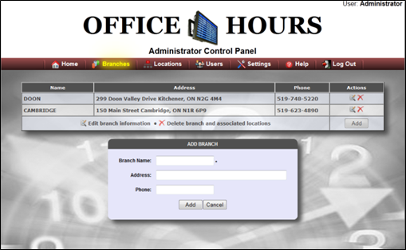

The Administrator can access all the branch information and have a privilege of editing branch information and deleting any of the existing Branch if required. All the information related to Branch can be viewed on the Branch panel on the Branch page such as Name, Address, Phone. If User wants to edit Branch information, User can select Edit option in the Branch panel which is given in the Actions column.

Created with the Personal Edition of HelpNDoc: Full featured Help generator